Ulead Gif Animator 基础教程
五、拆分文字 返回
文字动画中，有一种效果是文字逐渐显示，也称为叫打字机效果，下面我们来看一个练习；
1、运行程序
1）在桌面双击Ulead Gif Animator图标，或者在文件夹中双击它的图标，就可以启动程序；
2）启动成功后，显示一个默认的空白文档，如果出现向导提示，点“关闭”；

2、制作动画
1）按Delete键删除白色背景，选文字工具，点一下画布，输入“拆分文本”颜色为红色；
点菜单“编辑－修整画布”，裁去多于的部分；
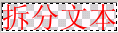
2）在右上角的对象面板中，瞄准文字，点右键，选“文本－拆分文字”命令，将四个字拆开；
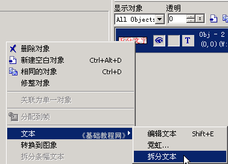 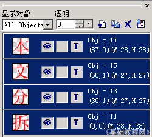
3）在对象面板中，点空白处取消全选，然后在每个字上敲右键，选“文本－编辑文本”命令，改成不同的颜色；
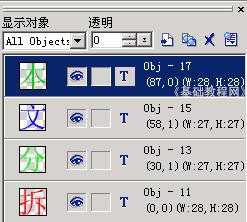
4）在下面的帧面板中，点三次“相同帧”按钮，复制三个相同的帧；
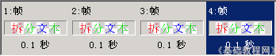
5）选中左边的第一帧，在上面的对象面板中，把“分、文、本”旁边的眼睛图标点一下去掉，只留下“拆”显示；
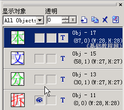
再在帧面板中选中第二帧，把“文、本”旁边的眼睛图标点一下去掉，
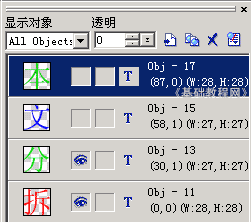
同样选中第三帧，把“本”旁边的眼睛图标点一下去掉；
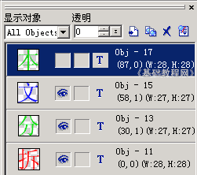
选中第四帧，点一下帧面板下面的“添加帧”按钮 ，添加一个空白帧，这样就有了5帧；
，添加一个空白帧，这样就有了5帧；
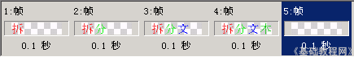
6）按住Ctrl键，分别点第1、2、3、4帧，全选中所有帧变蓝；
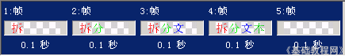
点一下帧面板下面最右边的“帧面板命令”按钮，选择“帧属性”命令，把10改成50；
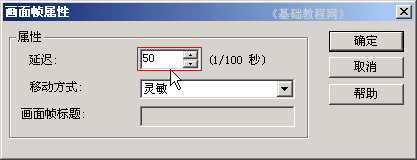
这样每一帧的时间为0.5秒，播放速度会变慢一些；
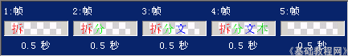
7）点菜单“文件－保存”命令，以“拆分”为文件名，保存文件到自己的文件夹；
再点菜单“文件－另存为－Gif文件..”，也以“拆分”为文件名，保存文件到自己的文件夹，这次保存的是是Gif图片文件；
本节学习了制作动画的一般步骤，以及保存和另存文件的方法，如果你成功地完成了练习，请继续学习下一课内容；
本教程由86团学校TeliuTe制作|著作权所有转载和引用本站内容，请保留作者和本站链接。